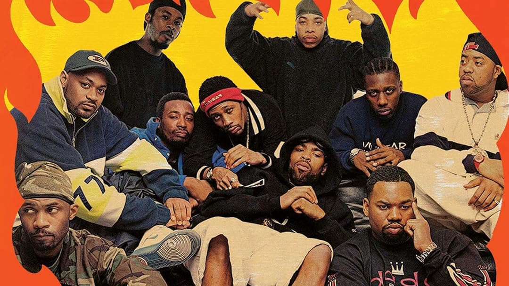

Benvenuto nel mondo dell'Hip Hop
Scopri la storia e i protagonisti di un genere che ha rivoluzionato la musica e la cultura.
Scopri di più



Scopri la storia e i protagonisti di un genere che ha rivoluzionato la musica e la cultura.
Scopri di più
L'Hip Hop è nato nel Bronx, New York, nei primi anni '70 come movimento culturale che comprende quattro elementi principali: MCing (rap), DJing, breaking (break dance) e graffiti. Da allora si è evoluto in uno dei generi musicali più influenti al mondo, dando voce a generazioni e creando un impatto culturale globale.
Dalle feste di quartiere alle classifiche mondiali, l'Hip Hop ha attraversato un percorso straordinario, influenzando moda, linguaggio e atteggiamenti in tutto il mondo.
Le migliori playlist e artisti Hip Hop
Caricamento contenuti da Spotify...